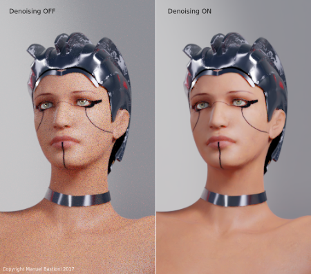
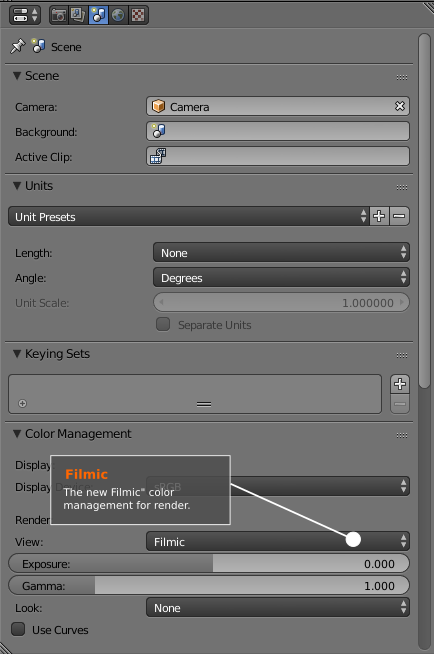
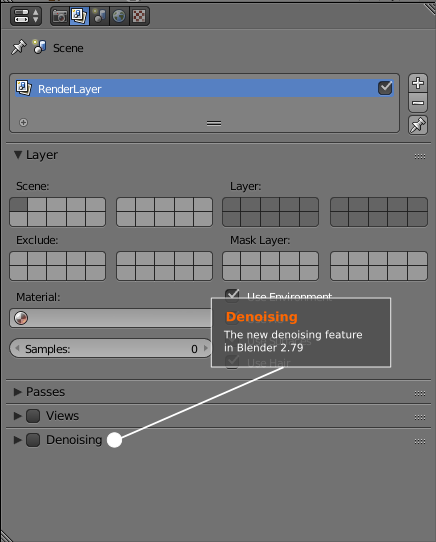

Testing ManuelbastioniLAB 1.5 with Blender 2.79: Filmic color management and the new denoising feature
10 August 2017
Blender 2.79 RC is officially released. The tests for compatibility with the current stable release of the lab (1.5.0) include the new rendering features: denoising and Filmic color management.
The Filmic color management is a fundamental feature for the photorealism, essential to jump the uncanny valley: it dramatically increases the quality of images using an improved algorithm for the dynamic range. In few words: the shading is much more accurate. The results are impressive, as you can see below.
Another important feature included in Blender 2.79 is the new "denoising" filter. It can require some tweaking to find a good balance between rendering time and final results, but the improvement in the rendering is very noticeable, in particular with the lab skin shader that uses a complex reflection.

The new features are easy to use. They are located in the property window, under "Layers" and "Scene".

